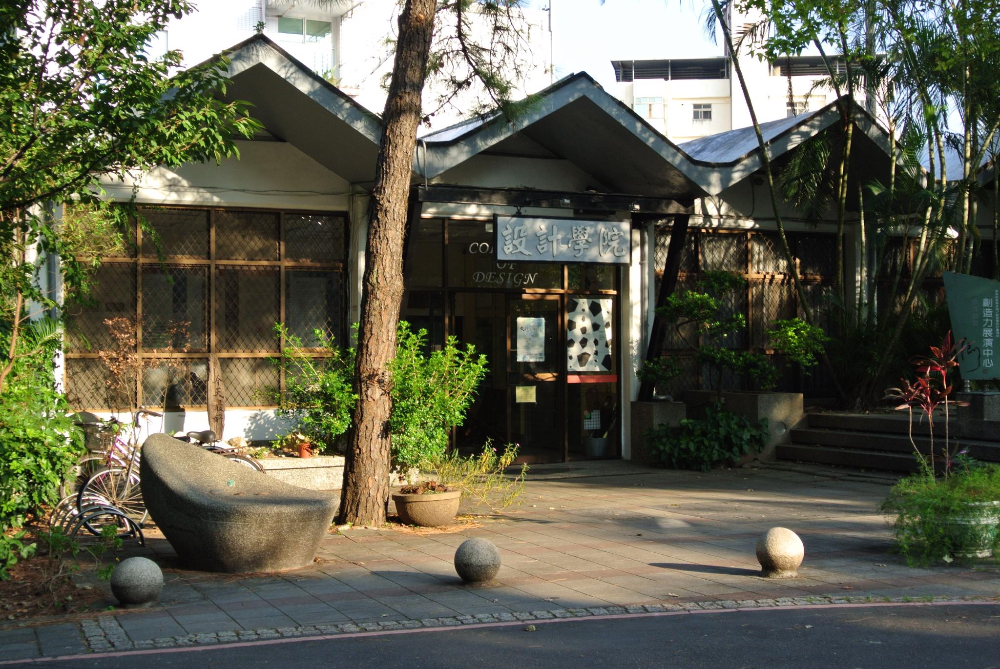

 |
永續性、實踐性、創意性、服務性本院於1992年8月1日創立，為國內率先成立的第一所設計學院；其中建築學系成立於1960年，該系具有悠久的歷史與優良的傳統及評價；而商業設計系、 室內設計系相繼於1984與1985年創立，均為國內第一所成立的學系，在國內不論在學生入學的成績或教師的學術資歷上均具有領先的地位。目前上述三系均設有碩士班 與碩士在職專班。2001年本院又增加了「文化資產研究所」。而「景觀學系」、「設計學研究所博士班」業於2004年成立，「景觀學系」亦於2011年設立碩士班。本院 所發行的「設計學研究」學報，為國內唯一以設計學院獨立發行的專業學術期刊，此學報已獲國科會評等為「良好期刊」。本院也設有「設計中心」，透過各中心的運 作，以推動多元化之產學合作。由於「設計」領域緣於人類文明發展過程中，針對達成自然環境與人為環境之間的協調。因此，本學院在教學的重點上，遵循中原大學教育理念，「尊重 自然與人性的尊嚴，尋求天人物我間和諧」，落實「全人教育」的理念。在研究方面，建築系歷年來積極推動「空間」相關之研究課題，推展「共生生態住居環境之研 究」。此外，商業設計系規劃的「數位媒體設計」學程、室內設計系之「社區營造」、「閒置空間再利用」以及文化資產研究所之「古蹟修護」等之重點研究，在已建 構出良好的基礎下，再增添「景觀學系」的「生態地景」相關研究，顯現出本院在未來拓展科際整合發展上蓄積了旺盛的動能。 |